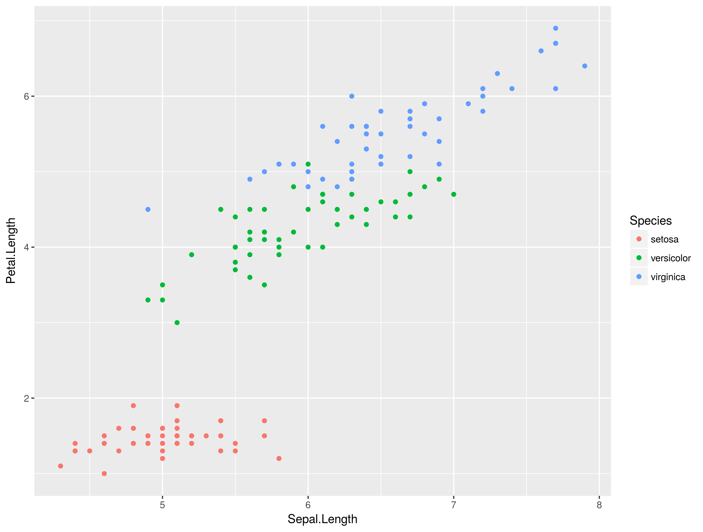

Why working with R?
Antismash is already providing many functions and analysis tools in it’s web interface. However, projects often involve newly sequenced organisms that are not available in public databases yet and only owned by you. Therefore, you have to perform certain analyses on your own, including unpublished and non analysed data.
Learning R will help you in handling the increasing amount of data. Projects working on 100 to 300 genomes simultaneously are common and certain projects combine analyses of 1000 genomes.

More data will become available and it will become increasingly important to work on these in a high throughput as well as reproducible manner.
Working with R
In this tutorial you will find code examples (snippets) and exercises. Type the snippets into your R script and execute them. Inspect what the functions do. Afterwards, try the exercises beneath the snippets.
R basics
R works with vectors of different kinds which is similar to other programming languages. However, the syntax is a bit different. c() in the example below is a function which concatenates the numeric values 1,2,3,4,5 to a numeric vector.
a <- c(1,2,3,4,5) # assigns a numeric vector from 1 to 5 to the variable a
a <- seq(5) # does the same as the line above using the seq function
sum(a) # calculates the sum of a
length(a)
class(a)
letters
class(letters)
b <- letters[1:20] # subsetting for first to 20th character
c <- letters[10:20]
d <- letters[15:25]
union(b,c,d)
- What do the
length()andclass()functions tell you? - How does the
union()function differ from thec()function? - How can you find the shared characters between b and c? Tip: Try the help function on
union() - Try out the function on objects b and c you found in the last
Reading data into R
Often you download datasets from different sources. Either a database, or you want to inspect the output of a program like antismash or interpro. We can read in data using functions. You can download the file example.tsv here
dat <- read.table("example.tsv", sep = '\t', header = TRUE) # Reading example file
head(dat) # Showing the header
str(dat) # Overview of observations (rows) and variables (columns)
- Why do we need the sep and header argument? Try the help function of read.table to find the answer (Tip: tsv stands for tab separated values).
In the following tutorial we will use built in datasets for reasons of simplicity. In the exercises you will work on the secondary metabolite annotations.
Data frames and built in datasets
R’s most common data structure is the data frame which is a table containing different numeric values, as well as descriptive values like characters or factors. R has a few build in datasets like the iris dataset.
This famous (Fisher’s or Anderson’s) iris data set gives the measurements in centimeters of the variables sepal length and width and petal length and width, respectively, for 50 flowers from each of 3 species of iris. The species are Iris setosa, versicolor, and virginica.
Data Overview
To get an overview of your data you can use the head() and str() function or simply print the object to console by typing the variables name and executing the line. Alternatively you can inspect your data in Rstudio using the environment panel.
> head(iris)
Sepal.Length Sepal.Width Petal.Length Petal.Width Species
1 5.1 3.5 1.4 0.2 setosa
2 4.9 3.0 1.4 0.2 setosa
3 4.7 3.2 1.3 0.2 setosa
4 4.6 3.1 1.5 0.2 setosa
5 5.0 3.6 1.4 0.2 setosa
6 5.4 3.9 1.7 0.4 setosa
> str(iris)
'data.frame': 150 obs. of 5 variables:
$ Sepal.Length: num 5.1 4.9 4.7 4.6 5 5.4 4.6 5 4.4 4.9 ...
$ Sepal.Width : num 3.5 3 3.2 3.1 3.6 3.9 3.4 3.4 2.9 3.1 ...
$ Petal.Length: num 1.4 1.4 1.3 1.5 1.4 1.7 1.4 1.5 1.4 1.5 ...
$ Petal.Width : num 0.2 0.2 0.2 0.2 0.2 0.4 0.3 0.2 0.2 0.1 ...
$ Species : Factor w/ 3 levels "setosa","versicolor",..: 1 1 1 1 1 1 1 1 1 1 ...
Quick recap of plant biology:

Subsetting
Data frames and other types of data can be subsetted to concentrate on certain groups of organisms, enzymes etc. We need to cover some more concepts to understand subsetting.
Try the following lines and describe what you get as a result:
iris
iris$species
iris$species == 'setosa'
subset(iris, Species == 'setosa') # same as above
iris$species %in% c('setosa', 'versicolor')
iris[c(1,2,3),]
iris[,c(1,2)]
We combine now two terms to subset our data frame:
iris[iris$species == 'setosa',]
Theres a lot of commands in that one line of code. On the outside we tell R to access the rows of the data frame iris[rows,columns] and on the inside we create a boolean vector (TRUE, FALSE statement) checking the whole column of iris$species if they are containing the term 'setosa'. Remember that single = will mean an assignment operation like in a = 1 and only double equation marks == will create a comparison.
Merging
Often we need to combine
ggplot2 basics
ggplot2 requires your dataframe in the first argument ggplot(yourDataFrame) afterwards you specify the type of plot like e.g. geom_point() and set the aesthetic mapping inside the latter function. Aesthetics tell ggplot the variables for each axis x,y and the groups you want to specify by color.
In the follwing example we use the standard R iris dataset and plot length of petals against length of sepals.
library(ggplot2)
ggplot(iris)+ geom_point(aes(x = Sepal.Length, y = Petal.Length, color = Species))

Using more geoms
Geoms are the types of plots you can create with ggplot2. Try typing geom_ in Rstudio and see what Rstudio suggests to you.
One useful geom is the histogram geom_histogram. This time we specify fill to color the inside of the plot objects. Above we had to use color because it affects the stroke of the plot data. In the below example we need to use the factor() function to create groups of data from numeric data. Try mtcars$gear vs factor(mtcars$gear), what is the difference?
head(mtcars)
ggplot(mtcars) + geom_histogram(aes(x = cyl, fill = factor(gear)), position = 'dodge')
More basic functions
aggregate
The aggregate function is very helpful for summary statistics. In case you want to know, e.g. what the average petal length per species is. Aggregates syntax follows aggregate(varOfInterest ~ groupVar).
aggregate(Petal.Length ~ Species, data = iris , FUN = mean)
- What is the mean Petal.Length for each species?
- What is the mean Sepal.Width for each species?
merge
Often you want to merge datasets. E.g. if you have annotation data from different sources. Let’s merge the iris dataset with a (completely made up) dataset of poisonus iris species.
iris
poison <- data.frame(
poisonous = c('poisonous', 'non-poisonous', 'non-poisonous'),
Species = c('setosa', 'virginica', 'versicolor')
)
pplants <- merge(iris, poison, by = "Species")
pplants # What happened to the dataset?
aggregate( Petal.Length~poisonous, pplants, mean)
- What does the last line tell us about the anatomy of poisonous plants?
split
Split let’s you split a data frame into a list. This is helpful for many downstream applications and readability (more on this later).
irisL <- split(iris, iris$Species) # creating a list of the iris dataset
iris # print and see
irisL['versicolor ']
irisL[['versicolor ']]
- What is the difference between the last two statements? Tip: Use the
class()function on the sublist of versicolor species but also print it to spot the difference
Introduction to lapply and sapply
The apply family of functions working similar to for-loops, meaning:
nrow(iris) # will give you the number of rows for the entire data frame
irisL
for(x in irisL){
nrow(element)
}
lapply(irisL, nrow) # Is basically the same as above.
lapply(irisL, function(x){
x
})
The function lapply() will retain the list structure while sapply() is simplifying the result to a vector.
Almost done: Heatmaps in R
Heatmaps are excellent to show relationships of e.g. organisms in large datasets. Given a similarity matrix we can create a plot which provides us with additional clustered information. We will need to introduce the matrix as another data object.
library(gplots)
speciesNames <- unique(iris$Species)
exampleMat <- matrix(c(100,70,50,70,100,85,50,85,100),
nrow = 3, ncol = 3,
dimnames = list(speciesNames, speciesNames)) # dimnames needs a list for row- and columnnames
exampleMat
heatmap.2(exampleMat,
trace = 'none',
margins = c(10,10)
)
- What does the heatmap tell you about the releationship of the iris species?
Well done, you finished the tutorial! Now try out your R skills in the exercises.
More info on R
A more detailed introduction to R can be found on another course page